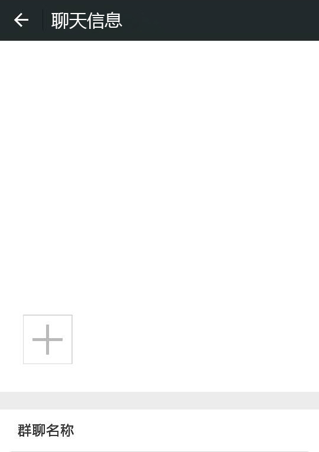
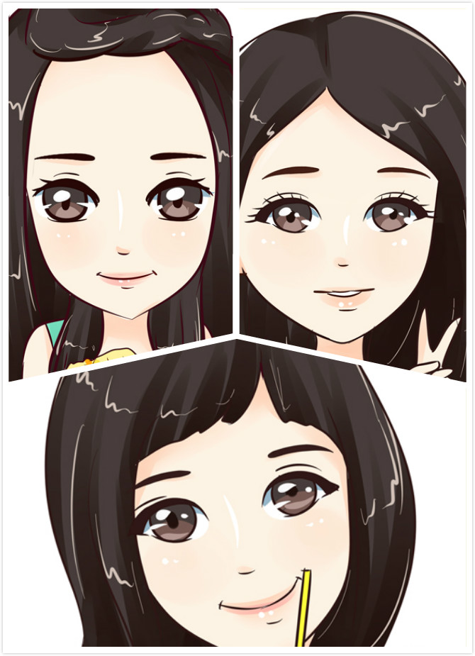

楚侨
黄颖
锦华
绮萍
绮莹
庆杨
瑞颜
淑玲
维斯
伍吉
晓霞
晓玉
遇见树本
朋友们陆续加入了微信群...
锦华
欢迎各位来自五湖四海的英才聚集狮山树本产业家园， 在这里我们从事的是为企业、员工服务的企业社会工作服务事业， 很高兴在这里遇见树本，遇见各位公益路上的同行者。
绮莹
我们所在的松夏工业园一共有企业约130家，企业员工约3万人，我们只有12个人，大家觉得要如何开展服务呢？
黄颖
而且这里交通不是太方便，只有278和280两路公交车经过，最晚一班车只到晚上8点，也不是一个人群自然聚集点，开展服务有一定的难度。
瑞颜
对的，而且我们必须注意到这里的员工大部分是两班倒和三班倒的，部分员工周末还不休息，我们开展服务的时间比较尴尬。
庆杨
这么说这个活不好干哦
淑玲
绮萍
晓霞
要不我们就从员工的兴趣爱好开始开展服务吧。
楚侨
服务的时间可以定在晚上或者周末，这样服务对象比较方便参与
维斯
对我们可以以兴趣小组吸引服务对象参与服务，然后让他们学习其中的技能，发展成为我们的义工和小组领袖，再由他们来担任义教老师、义工领袖、社团领袖，让他们成为我们提供服务的伙伴
伍吉
这个是从兴趣小组出发孵化社区自治组织，从而服务本社区的社区自治组织孵化理论，也叫地区发展模式
晓玉
什么模式，我没有看懂，不过好像可以试试
晓霞
这个理论的核心是为服务对象“赋权”，使服务对象不断成长，从而从一名服务使用者，发展为一名服务的提供者
淑玲、绮萍
，很厉害的样子

林雅、晓彬、艳芬（实习生）
锦华
那么我们就从兴趣小组开始吧，大家有什么具体的建议
绮萍
瑜伽
庆杨
足球
维斯
亲子阅读
绮莹
很好，就这么定了，大家加油~夜深了，大家休息吧，我还要加班
众人
，晚安群~
亲爱的社工，感谢你们创造了我，期待爱从这里传播开去，此刻起We’re 伐木累，加油亲们。
To Part3
 楚侨
楚侨 维斯
维斯